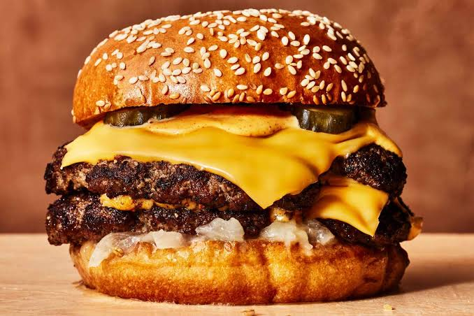

Burger

A burger is a classic American staple consisting of one or more cooked
patties—usually made from ground beef—placed inside a sliced bun. The meat
is typically grilled or pan-seared to create a flavorful, juicy crust. It
is commonly layered with melted cheese, fresh vegetables like lettuce,
tomato, and onions, and condiments such as ketchup, mustard, or special
sauces to create a rich, savory, and textured meal.
How to Make a Burger
-
Shape the Patties: Divide your ground meat into equal portions and
gently shape them into round burger patties. Make sure to press a slight
dimple in the center so they stay flat while cooking.
-
Season: Sprinkle both sides of the patties generously with salt and
pepper.
-
Cook the Meat: Place the patties in a hot skillet or on a grill. Cook
for about 4 minutes on the first side.
-
Melt the Cheese: Flip the patties, place a slice of cheese on top, and
cook for another 3 to 4 minutes until the meat is fully cooked and the
cheese is melted
-
Toast the Buns: Place your burger buns cut-side down in the pan for 1
minute until lightly toasted.
-
Assemble: Place the cooked patty on the bottom bun. Add your favorite
toppings like lettuce, tomato, ketchup, and mustard, then cover with the
top bun.